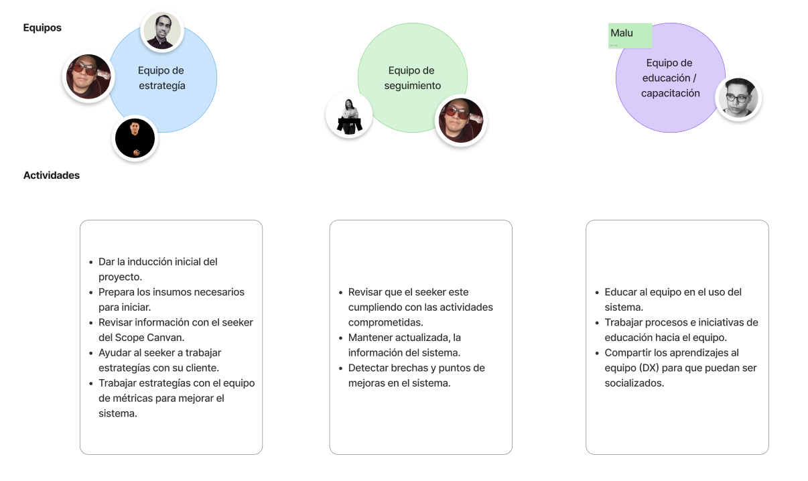

Resumen
Como UX Lead, diseñé un framework transversal para que distintos proyectos pudieran tomar decisiones de diseño con métricas claras, incluso en contextos de baja madurez en data.
Mi foco fue estructura, estrategia, proceso y adopción. No diseñé pantallas: diseñé cómo el equipo entiende problemas, formula hipótesis y aprende de la evidencia.
El Desafío
El equipo trabajaba en proyectos donde el diseño no siempre estaba conectado a negocio ni a evidencia. Me encontré con:
Decisiones por Opinión
Los diseñadores trabajaban sin métricas claras y cada proyecto tomaba decisiones de forma distinta.
Baja Claridad de Impacto
El diseño tenía dificultad para demostrar valor, priorizar iniciativas y ganar influencia estructurada.
El reto principal fue cambiar conversaciones basadas en opinión por decisiones medibles y alineadas a negocio.
Estrategia y Procesos
Lideré un sistema de trabajo para pasar de “qué diseño hacemos” a “qué queremos lograr y cómo lo vamos a medir”.
Diagnóstico
Facilité sesiones con el Scope Canvas para alinear problema, objetivo y comportamiento esperado.
Decisiones
Definí que no todos los proyectos debían medir impacto desde el inicio; algunos necesitaban exploración.
Proceso
Introduje modelo de madurez, sistema de hipótesis y estructura de aprendizaje replicable.
Soluciones de Alto Impacto
1. Framework de UX Metrics
Diseñé un sistema completo para conectar objetivos de negocio, decisiones de diseño y evidencia disponible.
- Framework de métricas adaptable por contexto.
- Modelo de madurez con 3 niveles de proyecto.
- Sistema de seguimiento para aprendizaje continuo.
2. Scope Canvas y Diagnóstico
Creé el Scope Canvas para capturar contexto, stakeholders, problema y objetivos antes de definir métricas.
Mapeé flujos y puntos de decisión para conectar comportamientos esperados con métricas y aprendizaje.
3. Hipótesis y Aprendizaje
Diseñé un sistema para formular hipótesis, decidir qué medir y documentar aprendizajes por nivel de madurez.
Mi aporte fue hacer que el proceso fuera replicable por un equipo de aproximadamente 12 diseñadores.
Resultados y Adopción
Proyectos con hipótesis claras para orientar decisiones de diseño.
Decisiones con algún tipo de evidencia disponible.
Niveles de madurez implementados para adaptar la estrategia.
Entregables Clave
Framework de Métricas
Sistema transversal para conectar diseño, negocio y data.
Modelo de Madurez
3 niveles para decidir si medir impacto o explorar primero.
Scope Canvas
Canvas de diagnóstico estratégico para iniciar proyectos con claridad.
Sistema de Hipótesis
Estructura para formular, medir y aprender con evidencia.
Galería del Proyecto



Aprendizajes y Liderazgo
-
01
Diseño con Sistema
Aprendí que el diseño no escala sin sistema: necesita criterios, lenguaje común y adopción del equipo.
-
02
Métricas con Contexto
Las métricas no sirven sin contexto; primero hay que entender madurez, objetivo y evidencia disponible.
-
03
Liderazgo de Criterio
No diseñé solo soluciones, diseñé un sistema para que el equipo tome mejores decisiones de forma consistente.